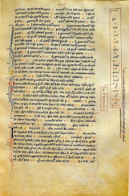

In the past few posts I have discussed a diverse set of topics, from
number representation to recurrence relations, Pythagorean triples.
All of these topics are related, and this is particularly illustrated
when we consider the work of Leonardo of Pisa, better known as Fibonacci
(from the Latin “de filiis Bonacci”, or “of the family of Bonacci”).
Fibonacci was born in 1175, in Pisa, Italy, shortly after the start of
the construction of the famous leaning tower. The city of Pisa was a
maritime republic which had its own colonies, including Bugia (in modern
day Algeria), where Leonardo’s father moved in 1192 to be a clerk in the
customs house. It was here that Fibonacci became acquainted with the
Hindu numerals and zero, and where his Muslim teacher introduced him to
the the great book Al-Jabr
wal-Muqabalah.
Fibonacci subsequently travelled broadly, where he learnt from
mathematicians of different cultures. Around 1200 he returned to Pisa
and began work on his masterpiece Liber Abaci, which was published in
1202, and begins with these words:
“The nine Indian figures are 9 8 7 6 5 4 3 2 1.
With these nine figures, and with the sign 0, which the Arabs call
zephyr, any number whatsoever is written”.
This is the earliest known formal mention of the decadic Hindu-Arabic
number system in the Western world.

The Liber Abaci contains a large collection of problems, some aimed at
merchants, but most related to algebra and what would now days be
considered number theory. One of these problems concerned the rate of
reproduction of rabbits, and how the number of pairs of rabbits grows
over successive generations assuming each pair spawns another at each
generation. If each pair takes one generation to mature, then the number
of adult pairs is given by the sequence:
1, 1, 2, 3, 5, 8, 13, 21, …
which are the now-famous Fibonacci numbers, defined by the recurrence
relation:
$$F_n = F_{n-1} + F_{n-2}$$
These numbers are a source of endless fascination, as they appear in
various guises throughout nature, art, architecture, and mathematics.
For example, the number of spirals of bracts on pineapples and pinecones
are Fibonacci numbers, as are the number of branches on some species of
trees, the number of ancestors at each generation of male bees, and
more. Furthermore, the ratio between consecutive Fibonacci numbers
approaches phi, the golden ratio, which again appears throughout art and
science. Many of these relationships only began to be noticed in the
1800’s, and it was in the mid-1800’s that the name “Fibonacci numbers”
was given them by Edouard Lucas - the inventor of the Tower of
Hanoi
puzzle. Today they still command attention, so much so that there is a
quarterly journal dedicated to their
exploration!
Many of these interesting properties of the Fibonacci numbers will be
discussed in future posts; for now, I wish to focus on the relationship
of the Fibonacci numbers to the Pythagorean triples. Before doing so I
need to point out one of the many interesting properties of the
Fibonacci numbers; the proof will be left for another day although you
may want to try obtain it yourself:
$$F_{2n-1} = F_n^2 + F_{n-1}^2$$
Can you prove the following?
- If we have a succession of four consecutive Fibonacci numbers
\(a, b, c, d\), then \((2bc, ad, b^2c^2)\) form a
Pythagorean triple
- Is it possible to have a triangle whose sides are all distinct
Fibonacci numbers? It should be obvious that this is not possible
with consecutive Fibonacci numbers, but what if we can choose any
Fibonacci numbers?
The first problem is quite easy to prove if we just note that \(c = a + b\)
and \(d = c + b = a + 2b\), and then expand the three
operations in the triple in terms of just \(a\) and \(b\):
$$A = 2bc = 2b ( a + b) = 2ab + 2b^2$$
$$B = ad = a (b + a + b) = a^2 + 2ab$$
$$C = b^2 + c^2 = b^2 + (a + b)^2 = a^2 + 2ab + 2b^2$$
If we then square these results it is trivial to see that \(A^2 + B^2 = C^2\) holds.
Interestingly, if we use two consecutive Fibonacci numbers as the
coefficients in the Babylonian formulae for Pythagorean triples (i.e.
the formulae given by
Diophantus),
then one of the numbers in the triple is a Fibonacci number. This should
be clear from the property mentioned above, which stated that the sum of
the squares of two consecutive Fibonacci numbers is a Fibonacci number
For the second problem, assume we have three distinct Fibonacci numbers,
\(F_a\), \(F_b\) and \(F_c\), ordered by size, so
that:
$$F_a \leq F_{b-1}$$
$$F_{b+1} \leq F_c$$
Then:
$$F_a + F_b \leq F_{b+1}$$
So:
$$F_a + F_b \leq F_c$$
which contradicts the triangle inequality - namely that the sum of any
two sides of a triangle must be greater than the third side.
 This seems fair on the surface - if someone obviously gets too few votes they
should be out of the running, and everyone gets their preferences for
the remaining candidates counted. But back in 1785, the Marquis de
Condorcet pointed out paradoxes in this system. For example, if there
are three candidates A, B, C and three voters who rank them A-B-C,
B-C-A, and C-A-B, the system is a tie. In general, this is known as
This seems fair on the surface - if someone obviously gets too few votes they
should be out of the running, and everyone gets their preferences for
the remaining candidates counted. But back in 1785, the Marquis de
Condorcet pointed out paradoxes in this system. For example, if there
are three candidates A, B, C and three voters who rank them A-B-C,
B-C-A, and C-A-B, the system is a tie. In general, this is known as


{kind=link}
{kind=link}
{kind=link}
{kind=link}